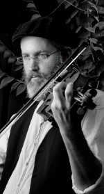

Discovering the Quill of the Soul
Violinist Oren Tzur tells about how he came to Chabad. * “The Tanya became my daily instruction book that teaches me how to implement everything I learn in life.” * The musician who discovered himself when he began learning Tanya.

At a very early age, Oren was looking for something outside of the normal framework, and he was drawn to the world of music. At the young age of six, he began studying music and playing the violin. Music filled his time, and at age 13 he left the kibbutz school and went to the Thelma Yellin High School of the Arts in Givatayim, considered the gold standard in musical education. He spent most of his day playing classical guitar and violin.
When he was drafted at age 18, he continued spending most of his time playing music. He knew some young musicians and they put together a band. They settled on Moshava Rosh Pina in the north and worked to produce original ethnic music appealing to “outsiders” searching for meaning.
Towards the end of his army service, Oren had already produced his first musical album, but this did not come along with personal or emotional satisfaction. Although he had never experienced the common search for self, he began seeking happiness. He sent some of his work to the Berklee College of Music in Boston, considered one of the best music schools in the world, and hoped to be accepted. To his delight, not only was he accepted, but he was even offered a scholarship.
He packed his bags and left for Boston, leaving nothing behind in Eretz Yisroel.
“In the period preceding this, music was my entire life. My mother was sick and I escaped into the world of music, but aside from that, I wasn’t attached to anything in Israel.”
In Boston, Oren looked for work to support himself. Ironically, he found a job in a Reform Judaica store.
“This Reform Judaica store had everything that could possibly be connected to Judaism. They had an entire department on Jewish and Israeli music.”
Oren was placed in charge of the music department. This was his first contact with Judaism, albeit not an authentic brand thereof. He was moved to buy a mezuza and to put it on his front door. Until today, he cannot explain how this happened, but he felt the need to connect in some way.
The next step was lighting candles at home Erev Shabbos. Before he would go out with friends on Friday night, he would light candles.
What happened to you all of a sudden? What makes a completely secular person put up a mezuza and light Shabbos candles?
“It was something internal. I have no other way to explain it. Years later, when I began learning Chassidus, I realized that this is what is called an is’arusa d’l’eila (arousal from above). My working with Jewish music had an effect on me. It was the first time I was hearing that kind of music. I remember that when I heard a Jewish klezmer recording, I felt that there was something that spoke to me.”
However, Oren’s time in Boston was cut short when his father became sick and died.
“I began thinking about life and death. I had never spent time on existential questions before, but suddenly I was moved to think. I think that prior to that, I didn’t contemplate these things because I was immersed in Olam HaZeh (this world).”
You say that, even though you were involved in music which has a more spiritual dimension?
“Music for me was part of Olam HaZeh. I never felt that I was spiritual, and I never used music as a form of self-searching. Such introspection just did not interest me up until then. Until my father died, I had never delved into such subjects. Nevertheless, I always felt there was some sort of supernal supervision. I always knew that there was Something that was bigger than the world and physical existence. I can say that I always felt the presence of G-d in my life, even if that was not reflected in my way of life.”
A “NATURAL PROCESS”
At just this point, a friend who had played with him in the band they formed while in the army called him and invited him back to Eretz Yisroel. He wanted Oren to join a new musical group. The offer came at just the right time. Since he had just experienced the death of his father, returning to Eretz Yisroel seemed like a good idea.
On his way home, he stopped briefly in London where he met a girl who later became his wife. They decided to get married, and returned to Eretz Yisroel together in order to settle there. The young couple settled in Pardes Chana and life was a routine of music, socializing and other interests. Oren’s questions remained in the background.
It was a little thing, which was ostensibly not at all significant, that caused a major change in Oren’s life. He discovered that he had scheduled two performances on the same date. This was a serious problem since neither place was willing to compromise and cancel a performance. Both places exerted pressure on Oren to cancel the other performance, so they wouldn’t have to cancel their own performance.
The pressure was what opened Oren’s eyes to stop what he was doing in life. The emotional burden and pressure connected with performances had taken a toll, and the argument about the performances caused Oren to physically collapse. He came down with pneumonia and lay in bed, not able to play at any performances.
While lying in bed, he decided to put a halt on his daily routine. His wife suggested that he begin pursuing the study of self knowledge. He looked for someone to teach him self-awareness, not having anything Jewish in mind. To his luck, he found a nice fellow by the name of Itamar Perlman who taught the approach of Rebbetzin Yemima Avital a”h. The classes included ideas from Chassidus, “and suddenly, my neshama woke up,” said Oren.
“I began learning in depth what self-awareness is, according to Judaism and Chassidus. Three months later, I had begun doing t’shuva. It wasn’t a process of illumination or one experience that changed everything, but a natural process that I flowed along with. Things happened spontaneously. I began putting on t’fillin, to keep Shabbos and kashrus. It was all within a short time. I still had not changed my outer appearance and did not fully enter the world of Torah and mitzvos, but it was clear to me that this was the direction. I loved what I was learning.”
So, one day, you just got up and start putting on t’fillin?
“I was looking for answers to the questions that I had. One day, I went to a bookstore and asked for a book that would change my life. He gave me a Tibetan book and said this was the best spiritual book that Eastern teachings had to offer. I read the book and nothing attracted me. I did not feel it spoke to me. I thought: these are nice stories, but they are not mine. As soon as I began learning Chassidus, my neshama woke up along with emuna. I felt that this was mine, as though something inside me said: Here is what you are looking for. It simply felt to me like the right frequency.
“The real change came about through a problem that cropped up as a result of the t’shuva process. Until then, I had worked every weekend with most of my performances on Friday night. I had canceled all my performances and therefore, I stopped getting requests to perform on Shabbos. I felt I was losing my parnasa. I wasn’t earning money, and worse than that, I had no place to play.”
A short while later, Oren received an offer from a Chassidic wedding band to join them as a violinist.
“I was given a bunch of Jewish recordings to listen to, in order to familiarize myself with the material. On one of the recordings, I heard the Chabad niggun “Tzama Lecha Nafshi” – the upbeat version – and at that moment, I felt that I had arrived; I had found what I was looking for. I spent an hour with my violin, playing this niggun, and simply gave myself over to it. I had an elevated feeling and realized that my soul had found peace.”
THE HAYOM YOM THAT SET HIM ON FIRE
How did you get from there to Chabad?
“I began learning more and more, but the more I studied I felt lost in the world of Torah. I was unable to connect to any distinct path and looked for direction. I wanted to learn kabbala and didn’t know how to go about it. For a long time, I went around to all kinds of kollelim and got to know all sort of approaches to Torah and mitzvos that were all fine, but not my path. For example, I didn’t know how to decide which halachos and customs to take on when there are so many approaches. I discovered all sorts of contradictions and approaches to living a Jewish life and didn’t know how to reconcile them. In Chabad, I found a clear path. I discovered a systematic approach to life and the world and found answers to all my life conflicts. Chassidus opened the way for me in all aspects of life.
“One day, I was sitting in rehearsal with the Chabad musician Naor Carmi, when he suddenly read the HaYom Yom where the Rebbe Rayatz brings in the name of the Baal Shem Tov that another Jew’s gashmius is your ruchnius. That set me on fire. I felt that this aphorism condensed the entire approach of Chassidus and kabbala in the clearest way. I decided that I wanted to follow this path of Chassidus and began learning the daily Chitas.
“When I wanted to learn Tanya, I discovered the shiurim of R’ Calev on disc and started watching them. After two years, he called me one day, without our ever having met. He introduced himself and said he had heard my niggunim and wanted to learn Tanya with me. Already on the telephone, he gave me much chizuk. I told him about my t’shuva and interest in Chassidus and felt we had a rapport. That was the beginning of a relationship that became a regular chavrusa and a collaboration of evenings of niggunim all over the country.
“R’ Calev did not only teach me Chassidus, but taught me how to turn these insights into a message for daily life. He taught me how to implement what we learned, and that is the most important thing. Because of the learning, I realized that the Torah is the true guiding light for all behavior. In Chabad, I got to know the path of true illumination and felt that it suited me. Tanya has given me a clear direction in life and it contains everything. I found references to every detail of life, and that had a tremendous effect on me. Learning Tanya affected me in areas that I felt lacking. I think that as soon as I began learning Tanya in the daily Chitas, I felt the change.”
TO REACH THE HIGHEST PLACES OF THE SOUL
Today, Oren is mainly involved in the production of old niggunim from a wide field of Chassidic courts, and especially authentic Chabad niggunim.
“Chabad niggunim express the highest place that one can reach through negina. These are niggunim that reach the highest places of the soul and they refine you from within. They shake you up at your very source and bring you true joy.”
Do you feel that this is your shlichus?
“Definitely. My shlichus is to bring joy; true inner joy. When niggunim are played, people feel a connection to G-d and to that which is above and beyond. It says in Chassidus that the source of a niggun is in the s’fira of bina.”
What is unique about Chabad niggunim?
“With Chabad niggunim, you feel the precision. You need to learn how to play and how to study them. There is a place for the external construct and for the inner dynamics of the niggun. It is all precise. You need to approach a niggun with a sense of awe, to feel that this is the quill of the soul. If you approach a niggun in this way and really bond with it, it is more powerful than any other connection, because a niggun contains a real connection to authentic yearnings. I learned a lot from the musician Nadav Becher who taught me so much about the world of Chassidic song.
“Since I’ve started working with niggunim, I can’t listen to other kinds of music. All other music suddenly sounds materialistic to me, compared to the spirituality of niggunim. A niggun is not music. There is nothing in the world of music that is like negina. You feel that it is from another world. That is the simple reason why a niggun is so uplifting.”
As part of his musical shlichus, Oren and Nadav started the band called A Groise Metzia whose goal it is to bring Chassidic content to the broader public through music. They composed songs around lyrics they wrote during the early days of their spiritual return, which successfully convey many deep messages, including deep ideas from Chassidus about the Ohr Ein Sof and Atzmus U’Mehus, to the public at large.
Oren is currently working on a new album which will tell his personal story.
“I feel that this is my shlichus, so I began translating my personal t’shuva stories into a musical album. This is my Avodas Hashem. Chassidus teaches that everyone has their portion in life, and I feel that this is my portion. Hashem gave me a mission and I hope I will succeed in doing it properly. One day, I visited the yeshiva in Ramat Aviv and a guy came over to me and said that during his t’shuva process he had a crisis and wanted to run away from it all. Then he heard our CD which strengthened him. Today he is a Tamim.”
In conclusion?
“All our negina is a rehearsal for the negina in the third Beis HaMikdash. I feel that the world of music is our tool for shlichus. The inyan of Geula is establishing the kingship of G-d’s light in the world and this is accomplished through music, when you are able to reach very distant places that are ordinarily hard to reach.”
Sholom Ber Crombie. "Discovering the Quill of the Soul." Beis Moshiach, no. 863 (January 3, 2013).